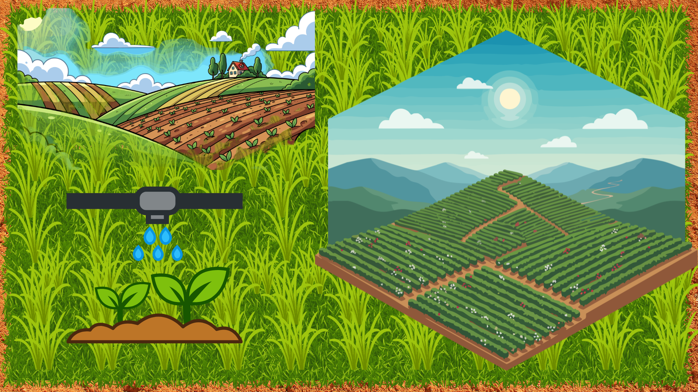

A Agricultura de Precisão é um conjunto de diferentes tecnologias, como sensores, maquinários aprimorados e sistemas de informação, para isso, essas tecnologias precisam levar em consideração a variabilidade do sistema agrícola.
A agricultura de precisão, adotada nos anos 1980, baseia-se em dados para aplicar os tratamentos ideais no momento e local exatos. Impulsionada por tecnologias como GNSS e GIS, ela evoluiu da distribuição de fertilizantes para maquinários autônomos e softwares de gestão, buscando três objetivos:
A agricultura de precisão otimiza o uso de insumos ao aplicar sementes, fertilizantes e defensivos em taxas variadas, baseando-se nas necessidades reais de cada metro quadrado. Por meio de tecnologias de monitoramento, o produtor corrige deficiências onde necessário e evita desperdícios onde o solo já é fértil.
Precision agriculture optimizes input use by applying seeds, fertilizers, and crop protection products at variable rates based on the specific needs of each square meter. Through monitoring technologies, the producer corrects deficiencies where necessary and avoids waste in areas where the soil is already fertile.
A agricultura de precisão transformou o agronegócio brasileiro, mudando o manejo de "média de fazenda" para o gerenciamento de variabilidade em cada talhão. Ela promove ganhos em produtividade, redução de custos com insumos e sustentabilidade ambiental, sendo uma exigência para manter a competitividade do país no mercado global.

Esta página foi útil?